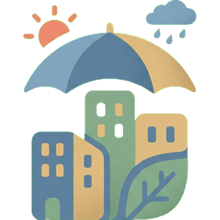
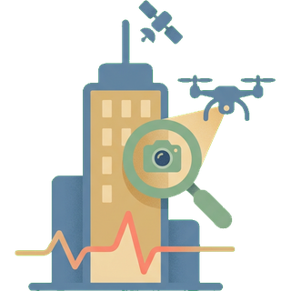
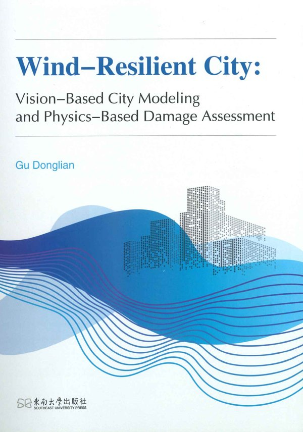

AI + Urban Science for climate-resilient, safer cities.
Professor; Deputy Director (in charge), Institute of Urban Safety and Disaster Prevention, Research Institute of Urbanization and Urban Safety, University of Science and Technology Beijing (USTB)
Donglian Gu is a Professor at the Research Institute of Urbanization and Urban Safety, University of Science and Technology Beijing (USTB), and Deputy Director (in charge) of its Institute of Urban Safety and Disaster Prevention. Gu received a B.Eng. (2016, with a second degree from the School of Economics and Management) and a Ph.D. (2021) in Civil Engineering from Tsinghua University, and was a visiting scholar at UC Berkeley in 2018.
Gu's research lies at the intersection of artificial intelligence and urban science, focusing on climate-resilient cities, urban wind engineering and urban health monitoring. Combining computational fluid dynamics, computer vision, deep learning, drone photogrammetry, street-view imagery and InSAR, the group simulates, monitors and assesses disaster risks at the scale of entire cities.
Gu leads projects funded by the National Natural Science Foundation of China (General and Young Scientists programs), the National Key R&D Program and the Beijing Nova Program, and the work has received first prizes including the Beijing Science and Technology Progress Award. Gu serves on the inaugural Young Editorial Board of the Journal of Southeast University and on the councils of several national societies for urban safety and wind engineering.
2026–CareerProfessor, USTB
2022–2026CareerAssociate Professor, USTB
2016–2021EducationPh.D., Civil Engineering, Tsinghua University
2018EducationVisiting scholar, UC Berkeley
2012–2016EducationB.Eng., Civil Engineering, Tsinghua University Second degree, School of Economics and Management
02
Research directions

I.
Climate-Resilient Cities
II.
Urban Wind Engineering

III.
Urban Health Monitoring
03
Monograph

Wind-Resilient City: Vision-Based City Modeling and Physics-Based Damage Assessment
Donglian Gu (sole author)
A “visual perception–digital twin–physical simulation” framework that models cities from multi-source imagery and simulates citywide wind fields, wind loads and damage risk.
Publisher
Southeast University Press, Nanjing
Published
January 2026
ISBN
978-7-5766-2631-5
04
Publications
By year, newest first · * corresponding author
Research across civil engineering, wind engineering and urban science.
2026
1
D. Gu, W. Jin, W. Chen, L. Xu. Assessing multiple construction workers' physical fatigue risks in 3D space.Computer-Aided Civil and Infrastructure Engineering, 100060, 2026. DOIIF 9.2
Extends fatigue assessment from a single worker to whole crews, tracking several workers' physical fatigue risk in 3D.
2
Metric 3D localization of bridge cracks via training-free fractal-guided segmentation and multi-sensor fusion.Measurement, 2026. DOIIF 6.1
Locates bridge cracks at true 3D scale by pairing training-free fractal-guided segmentation with multi-sensor fusion.
3
W. Chen, X. Wang, D. Gu*, L. Xu. Advancing real-time assessment for work-related musculoskeletal disorders in construction using large foundation models.Results in Engineering, 29, 109224, 2026. DOI
Uses large foundation models to assess construction workers' musculoskeletal-disorder risk in real time.
4
J. Fu, D. Gu*, Z. Xu, Q. Yue. Wind-induced electric power interruption: A review of risk source, risk exposure, and risk mitigation.International Journal of Disaster Risk Science, 2026. DOIIF 5.3
Reviews how wind causes power outages through the lens of risk source, exposure and mitigation.
5
Z. Xu, C. Liang, Z. Mu, Y. Tian, D. Gu*. Structural type identification of city-scale building groups based on deep learning.Journal of Computing in Civil Engineering, 40(1), 04025119, 2026. DOIIF 5.8
Deep learning identifies the structural type of buildings across a city, feeding regional hazard models.
6
D. Gu, X. Wang, W. Zhang, Q. Shuai, Z. Xu. Physics-informed optimization of urban greening for pollen-induced allergenic risk mitigation: A scalable framework powered by built environment-embedded dispersion modeling.Sustainable Cities and Society, 107934, 2026. DOIIF 13.3
Couples city-scale pollen dispersion modeling with optimization to plan urban greening that cuts allergy risk.
7
Z. Xu, X. Tang, Y. Yang, Y. Tian, D. Gu. Evacuation performance of occupants at different smoke layer height based on mixed reality.Developments in the Built Environment, 100945, 2026. DOIIF 8.7
Uses mixed-reality experiments to measure how smoke-layer height changes occupant evacuation.
8
Z. Xu, Y. Wu, Y. Tian, D. Gu, Q. Yue, X. Lu. Long-term urban resilience trajectories following earthquakes.npj Urban Sustainability, 2026. DOI
Traces how cities recover over the long term after major earthquakes.
9
Q. Yue, Z. Shi, Z. Xu, K. Liu, L. Zhou, N. Jin, Y. Liu, Y. Tian, J. Zhang, Z. Liu, et al. The risk source–risk exposure–mitigation force theory of urban safety and its enabling space–air–ground integrated monitoring technologies.Engineering Cities, 2026. Scholar
Pairs the urban-safety theory with space–air–ground monitoring technologies that put it into practice.
An improved time-series InSAR method monitors ground settlement on Shenzhen Qianhai's reclaimed land.
7
史涛, 岳清瑞, 许镇, 金楠, 顾栋炼*. 基于风险源-承灾体-减灾力理论的建筑屋面附属设施风致破坏研究综述.工程力学, 2026. DOI
Reviews wind damage to rooftop attachments using the risk source–exposure–mitigation theory.
2025
12
F. Zhang, Z. Xu, R. Zhu, C. Liang, D. Gu. Geospatial mapping of urban utility networks integrating street view images and design rules.Computer-Aided Civil and Infrastructure Engineering, 40(27), 4884–4903, 2025. DOIIF 9.2
Maps underground utility networks from street-view imagery plus engineering design rules.
8
W. Chen, D. Gu*. Real-time physical fatigue risk assessment for construction workers using a teacher-student training paradigm.Automation in Construction, 177, 106372, 2025. DOIIF 12.6
A teacher–student training scheme enables lightweight, real-time fatigue risk assessment for workers.
9
D. Gu, Q. Shuai, N. Zhang, N. Jin, Z. Zheng, Z. Xu, Y. Xu. Multi-view street view image fusion for city-scale assessment of wind damage to building clusters.Computer-Aided Civil and Infrastructure Engineering, 40(2), 198–214, 2025. DOIIF 9.2
Fuses multi-view street-view images to assess wind damage to buildings across a city.
10
G. Zhai, B.F. Spencer, J. Yan, W. Liao, D. Gu, et al. Coupled data/physics-driven framework for accurate and efficient structural response simulation.Engineering Structures, 327, 119636, 2025. DOIIF 7.6
Couples data-driven and physics-based models for fast yet accurate structural response simulation.
11
Z. Xu, Y. Zhu, J. Fan, Q. Zhou, D. Gu, Y. Tian. A spatiotemporal casualty assessment method caused by earthquake falling debris of building clusters considering human emergency behaviors.International Journal of Disaster Risk Reduction, 117, 105206, 2025. DOIIF 4.8
Estimates casualties from earthquake falling debris over space and time, accounting for how people evacuate.
12
Y. Wu, L. Xu, D. Gu*, N. Zhang, Z. Zheng, Y. Xu. Vision-based recognition and geolocation of colored steel constructions in cities to promote urban management.Journal of Building Engineering, 102, 111904, 2025. DOIIF 8.1
Computer vision finds and geolocates colored-steel structures across a city to support urban management.
13
A three-dimensional simulation method of fire spread for building clusters based on oblique photography and variable multi-grid.Journal of Building Engineering, 112781, 2025. DOIIF 8.1
Simulates fire spread across building clusters in 3D, built from oblique photography with a variable multi-grid.
19
J. Fu, Z. Xu, Q. Yue, J. Lin, N. Zhang, Y. Zhao, D. Gu. A multi-object detection method for building fire warnings through artificial intelligence generated content.Scientific Reports, 15, 18434, 2025. DOIIF 4.9
Trains fire-warning detectors on AI-generated images to spot multiple fire cues in buildings.
20
Z. Xu, X. Tang, W. Li, Y. Zhao, D. Gu, Y. Tian. Human detection with smoke occlusion based on AI-generated images.Journal of Safety Science and Resilience, 100235, 2025. DOI
Detects people hidden by smoke using detectors trained on AI-generated scenes.
14
Y. Wang, X. Lu, S. Rianto, D. Gu*. Falling debris from building envelope infill walls impacted by earthquake-induced building collision: Experiment and finite element analysis.Structures, 79, 109523, 2025. DOIIF 4.9
Tests and models how building pounding during earthquakes knocks debris off infill walls.
Weakly supervised semantic segmentation of drone imagery powered by vision foundation models.
16
Q. Yue, X. Lu, Z. Xu, Z. Shi, Y. Tian, et al. The "risk source–risk exposure–mitigation force" theoretical framework for urban safety.Engineering Mechanics, 42(7), 19–27, 2025. DOI
Proposes a unifying theory of urban safety built on risk source, exposure and mitigation capacity.
24
Z. Wang, G. Han, X. Deng, Q. Yue, H. Zhang, X. Li, M. Li, Y. Tian, D. Gu, Z. Xu, Z. Shi. Resilient city construction enabled by digital intelligence technology (数智科技赋能韧性城市建设发展战略研究).Strategic Study of CAE, 27(4), 1–12, 2025. DOI
A strategy study on how digital and intelligent technologies can build resilient cities in China.
25
G. Han, Z. Xu, Y. Cao, H. Cai, T. Zhi, L. Sun, D. Gu, Y. Tian, Y. Xie, Z. Chang. Research on the pathways of information technology empowering cities to enhance disaster resilience.2025 6th International Conference on Internet of Things, Artificial Intelligence and Mechanical Automation (IoTAIMA), 2025. DOI
Outlines pathways for information technology to strengthen urban disaster resilience.
2024
17
D. Gu, Q. Yue, L. Li, C. Sun, X. Lu. Vision-based digital shadowing to reveal hidden structural dynamics of a real supertall building.Engineering, 43, 146–158, 2024. DOIIF 12.2
Uses cameras to build a digital shadow of a real supertall tower, revealing structural dynamics that sensors miss.
18
D. Gu, N. Zhang, Q. Shuai, Z. Xu, Y. Xu. Drone photogrammetry-based wind field simulation for climate adaptation in urban environments.Sustainable Cities and Society, 117, 105989, 2024. DOIIF 13.3
Turns drone photogrammetry into city CFD models to simulate urban wind for climate adaptation.
19
D. Gu, N. Zhang, Z. Xu, Y. Wu, Y. Tian. Urban risk assessment model to quantify earthquake-induced elevator passenger entrapment with population heatmap.Computer-Aided Civil and Infrastructure Engineering, 39(14), 2204–2222, 2024. DOIIF 9.2
Combines population heatmaps with seismic analysis to predict how many people are trapped in elevators.
20
W. Chen, D. Gu*, J. Ke. Real-time ergonomic risk assessment in construction using a co-learning-powered 3D human pose estimation model.Computer-Aided Civil and Infrastructure Engineering, 39(9), 1337–1353, 2024. DOIIF 9.2
A co-learning 3D pose model scores construction workers' ergonomic risk in real time from video.
21
Y. Wang, Q. Yue, X. Lu, D. Gu*, Z. Xu, Y. Tian, S. Zhang. Digital twin approach for enhancing urban resilience: A cycle between virtual space and the real world.Resilient Cities and Structures, 3(2), 34–45, 2024. DOI
Proposes a digital-twin loop linking virtual simulation and the real city to strengthen resilience.
22
Z. Xu, Y. Zhu, D. Gu*, Q. Zhou. An integrated simulation method for large-scale earthquake-induced falling debris in building groups.Earthquake Engineering & Structural Dynamics, 53(5), 1767–1786, 2024. DOIIF 4.9
Simulates earthquake-induced falling debris across entire building groups.
23
Y. Tian, S. Liu, S. Chen, D. Gu*. The site-city interaction effect uncertainty on structural responses and its application to fragility analysis of buildings in Shanghai CBD.Structures, 69, 107494, 2024. DOIIF 4.9
Quantifies how site–city interaction uncertainty alters building responses and fragility in Shanghai's CBD.
24
S. Rianto, X. Lu, D. Gu, Z. Xu. An end-to-end framework for fire following earthquake simulation at regional scale: A case study on the 2024 Japan Noto Peninsula earthquake.International Journal of Disaster Risk Reduction, 104859, 2024. DOIIF 4.8
End-to-end regional simulation of post-earthquake fires, tested on the 2024 Noto Peninsula earthquake.
A collapse-resistance case study of a 489 m supertall building.
2023
26
C. Sun, D. Gu, X. Lu. Three-dimensional structural displacement measurement using monocular vision and deep learning based pose estimation.Mechanical Systems and Signal Processing, 190, 110141, 2023. DOIIF 10.2
Measures 3D structural displacement with a single camera and deep-learning pose estimation.
27
D. Gu, A. Kareem, X. Lu, Q. Cheng. A computational framework for the simulation of wind effects on buildings in a cityscape.Journal of Wind Engineering and Industrial Aerodynamics, 234, 105347, 2023. DOIIF 5.1
A framework for simulating wind effects on buildings across a whole cityscape.
28
D. Gu, Q. Shuai, Y. Wang. CIM-powered physics-based assessment of wind damages to building clusters considering trees.Developments in the Built Environment, 15, 100178, 2023. DOIIF 8.7
Uses city information models to assess wind damage to buildings, including the role of trees.
29
Probability-based city-scale risk assessment of passengers trapped in elevators under earthquakes.Sustainability, 15(6), 4829, 2023. DOIIF 4.1
A probabilistic, city-wide estimate of elevator entrapment during earthquakes.
2022
30
C. Sun, D. Gu, Y. Zhang, X. Lu. Vision-based displacement measurement enhanced by super-resolution using generative adversarial networks.Structural Control and Health Monitoring, 29(10), e3048, 2022. DOIIF 5.0
GAN super-resolution sharpens video so cameras can measure structural displacement more precisely.
31
D. Gu, W. Chen, X. Lu. Automated assessment of wind damage to windows of buildings at a city scale based on oblique photography, deep learning and CFD.Journal of Building Engineering, 52, 104355, 2022. DOIIF 8.1
Combines oblique photography, deep learning and CFD to predict window damage in windstorms across a city.
32
The "database–network–flow–spectrum–law" theoretical framework for urban safety characterization based on "risk source" + "risk exposure" + "mitigation factor".Engineering Mechanics, 2022. DOI
A "database–network–flow–spectrum–law" framework for characterizing urban safety.
2021
33
D. Gu, P. Zhao, W. Chen, Y. Huang, X. Lu. Near real-time prediction of wind-induced tree damage at a city scale: Simulation framework and case study for Tsinghua University campus.International Journal of Disaster Risk Reduction, 53, 102003, 2021. DOIIF 4.8
Predicts wind-induced tree damage city-wide in near real time, demonstrated on the Tsinghua campus.
2020
34
X. Lu, D. Gu, Z. Xu, C. Xiong, Y. Tian. CIM-powered multi-hazard simulation framework covering both individual buildings and urban areas.Sustainability, 12(12), 5059, 2020. DOIIF 4.1
A CIM-based framework simulating multiple hazards from single buildings to whole cities.
35
D. Gu, Z. Zheng, P. Zhao, L. Xie, Z. Xu, X. Lu. High-efficiency simulation framework to analyze the impact of exhaust air from COVID-19 temporary hospitals and its typical applications.Applied Sciences, 10(11), 3949, 2020. DOIIF 2.9
Rapidly simulates how exhaust air from COVID-19 temporary hospitals disperses into surrounding areas.
Rapid simulation method for the environmental impact of temporary-hospital exhaust air (Chinese-language study).
37
方东平, 李全旺, 李楠, 王飞, 刘影, 顾栋炼, 孙楚津, 潘胜杰, 侯冠杰, 陆新征. 社区地震安全韧性评估系统及应用示范 (An evaluation system for community seismic resilience and its application in a typical community).工程力学, 37(10), 28–44, 2020. DOI
An evaluation system for community seismic resilience, demonstrated in a typical community.
2019
38
基于动力弹塑性时程分析和实测地面运动的地震破坏力速报系统 (A rapid reporting system of earthquake destructive power based on nonlinear time-history analysis and actual ground motion records).自然灾害学报, 2019. DOI
Rapidly reports an earthquake's damage potential by running nonlinear analyses on recorded ground motions.
39
改变框架-核心筒结构剪力调整策略对其抗震性能影响的研究 (Influence of changing shear adjustment strategy on aseismic performance of frame-core tube structure).工程力学, 2019. DOI
Examines how shear-adjustment strategies change the seismic performance of frame–core-tube buildings.
40
Experimental study of novel concrete frames considering earthquake and progressive collapse. In: Concrete Structures in Earthquake (Springer), 2019. DOI
Tests new RC frame detailing that resists both earthquakes and progressive collapse.
41
Seismic loss assessment for buildings with multiple LOD BIM data.13th International Conference on Applications of Statistics and Probability in Civil Engineering (ICASP13), 2019. Paper
Assesses building seismic losses using BIM data at multiple levels of detail.
2017
42
Q. Yang, X. Lu, C. Yu, D. Gu. Experimental study and finite element analysis of energy dissipating outriggers.Advances in Structural Engineering, 20(8), 1196–1209, 2017. DOIIF 2.5
Tests and models energy-dissipating outriggers that protect tall buildings in earthquakes.
43
Experimental studies on a novel structural detailing of RC frames to resist earthquake and progressive collapse.IABSE Symposium, Vancouver, 2017. DOI
Conference study of the new RC frame detailing against earthquake and progressive collapse.
44
Influence of seismic action adjustments on seismic design and safety of RC frames.工程力学, 2017. DOI
Studies how adjusting seismic actions affects the design and safety of RC frames.